- 00 开篇词 打破四大认知局限，进阶高级性能工程师.md.html
- 01 性能工程：为什么很多性能测试人员无法对性能结果负责？.md.html
- 02 关键概念：性能指标和场景的确定.md.html
- 03 核心分析逻辑：所有的性能分析，靠这七步都能搞定.md.html
- 04 如何构建性能分析决策树和查找瓶颈证据链？.md.html
- 05 性能方案：你的方案是否还停留在形式上？.md.html
- 06 如何抽取出符合真实业务场景的业务模型？.md.html
- 07 性能场景的数据到底应该做成什么样子？.md.html
- 08 并发、在线和TPS到底是什么关系？.md.html
- 09 如何设计全局和定向监控策略？.md.html
- 10 设计基准场景需要注意哪些关键点？.md.html
- 11 打开首页之一：一个案例，带你搞懂基础硬件设施的性能问题.md.html
- 12 打开首页之二：如何平衡利用硬件资源？.md.html
- 13 用户登录：怎么判断线程中的Block原因？.md.html
- 14 用户信息查询：如何解决网络软中断瓶颈问题？.md.html
- 15 查询商品：资源不足有哪些性能表现？.md.html
- 16 商品加入购物车：SQL优化和压力工具中的参数分析.md.html
- 17 查询购物车：为什么铺底参数一定要符合真实业务特性？.md.html
- 18 购物车信息确定订单：为什么动态参数化逻辑非常重要？.md.html
- 19 生成订单信息之一：应用JDBC池优化和内存溢出分析.md.html
- 20 生成订单信息之二：业务逻辑复杂，怎么做性能优化？.md.html
- 21 支付前查询订单列表：如何分析优化一个固定的技术组件？.md.html
- 22 支付订单信息：如何高效解决for循环产生的内存溢出？.md.html
- 23 决定容量场景成败的关键因素有哪些？.md.html
- 24 容量场景之一：索引优化和Kubernetes资源分配不均衡怎么办？.md.html
- 25 容量场景之二：缓存对性能会有什么样的影响？.md.html
- 26 稳定性场景之一：怎样搞定业务积累量产生的瓶颈问题？.md.html
- 27 稳定性场景之二：怎样搞定磁盘不足产生的瓶颈问题？.md.html
- 28 如何确定异常场景的范围和设计逻辑？.md.html
- 29 异常场景：如何模拟不同组件层级的异常？.md.html
- 30 如何确定生产系统配置？.md.html
- 31 怎么写出有价值的性能报告？.md.html
- 我们这个课程的系统是怎么搭建起来的？.md.html
- 结束语 做真正的性能项目.md.html
- 捐赠
21 支付前查询订单列表：如何分析优化一个固定的技术组件？
今天我们来分析支付前查询订单列表接口。
在这节课中，我将带你来看一下对于一个固定的技术组件，分析优化思路应该是怎样的，也就是说组件不是我们开发的，但是又要分析优化它，我们该怎么办？
此外，我们还会遇到一个问题，就是当数据库的CPU并没有全部用完，而是只用了几颗的时候，我们应该如何具体定向？对此，我们将用到查看数据库本身线程栈的方法，这和前面直接看trx表有所不同。
下面，我们一起进入今天的内容。
场景运行数据
对于支付前查询订单列表接口，我们先来看第一次运行的性能场景结果：
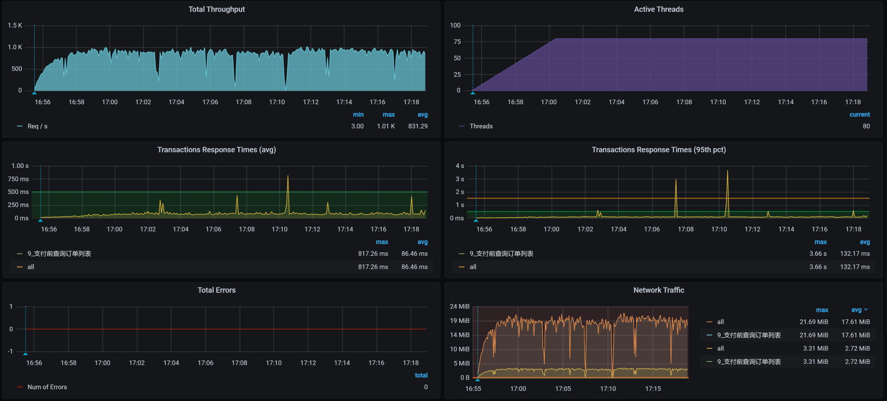
从运行的场景数据来看，这个接口的TPS一开始还是挺高的，达到了800多。但是，响应时间也增加了，瓶颈已经出现。我们只要知道瓶颈在哪，就能知道这个接口有没有优化空间。
根据高老师的分析逻辑，在正式分析之前，我们看一下架构图。
架构图
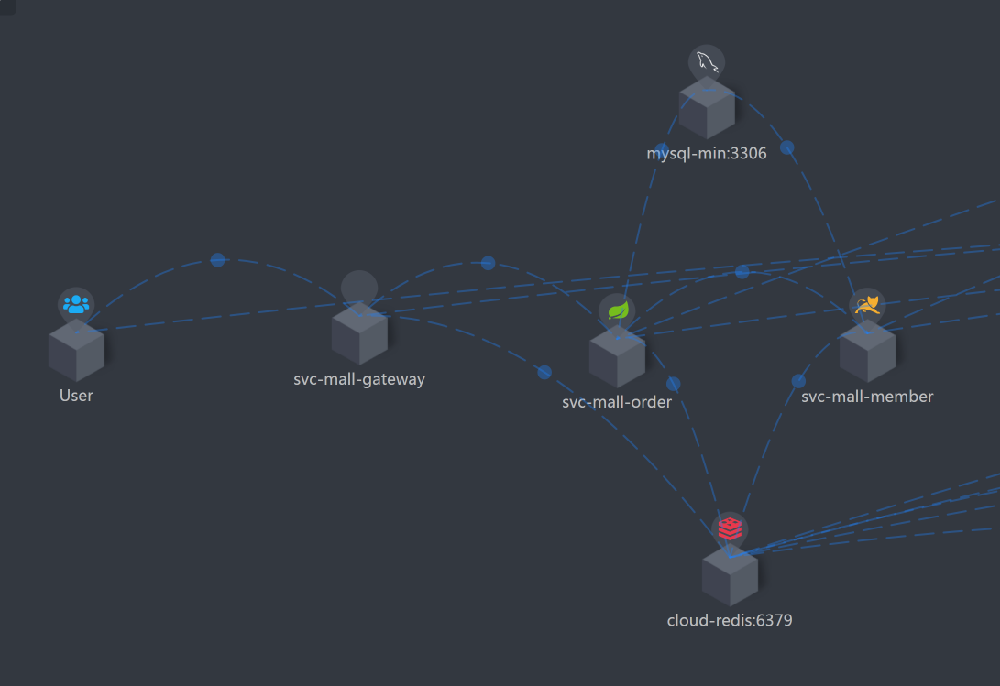
这张架构图是非常清楚的，可以看到，当前接口的逻辑为：Gateway - Order - Member，其中也使用到了MySQL和Redis。
下面我们来看看，响应时间消耗到哪里去了。
拆分响应时间
Gateway：- 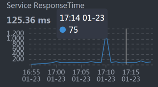
Order：- 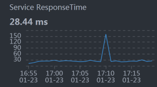
Member：- 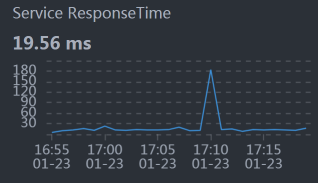
从响应时间的分布来看，Gateway（网关）上消耗的时间要长一些。所以，我们接下来得从Gateway下手，分析一下到底是哪里消耗了时间。
第一阶段
全局监控分析
按照“先看全局监控，后看定向监控”的逻辑，我们先看这个接口的全局监控：
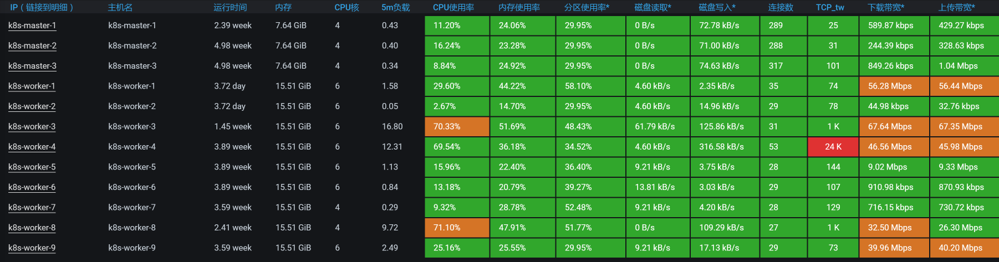
由于Gateway消耗的响应时间长，我们看过全局监控视图之后，要判断出Gateway在哪个worker上：
[root@k8s-master-2 ~]# kubectl get pods -o wide | grep gateway
gateway-mall-gateway-757659dbc9-tdwnm 1/1 Running 0 3d16h 10.100.79.96 k8s-worker-4 <none> <none>
[root@k8s-master-2 ~]#
这个Gateway服务在worker-4上，同时，在全局监控图上可以看到，虽然Gateway只消耗了70%的CPU，但它还是消耗了最多的响应时间。既然这样，我们就要关注一下Gateway的线程状态，看看它在处理什么。
定向监控分析
在做定向监控时，我们先来看一下线程的CPU消耗：
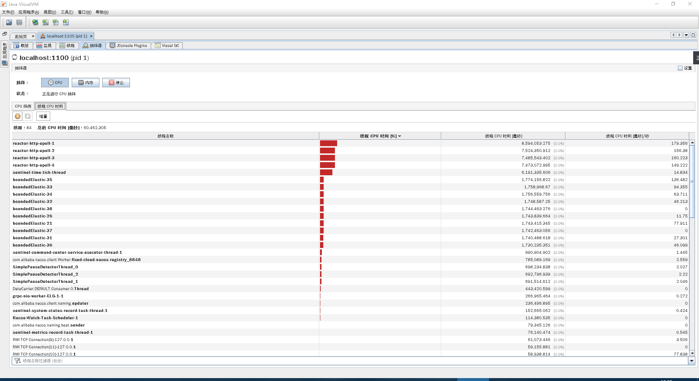
通过上图可以看到，在Gateway中有两类重要的工作线程，分别是reactor-http-epoll和boundedElastic。
在官方的说明中提到，reactor-http-epoll线程的设置最好与CPU个数一致。我们当前的reactor-http-epoll线程是4个，而这个worker有6C，所以还能增加两个，增加多了意义也不大。至于boundedElastic，它是有边界的弹性线程池，默认为CPU核x10，也没啥可优化的。
我们再持续看一会儿Gateway服务中的线程所消耗的时间比例，看一下方法级的时间消耗有没有异常的情况，也就是比例非常高的，如下图所示：
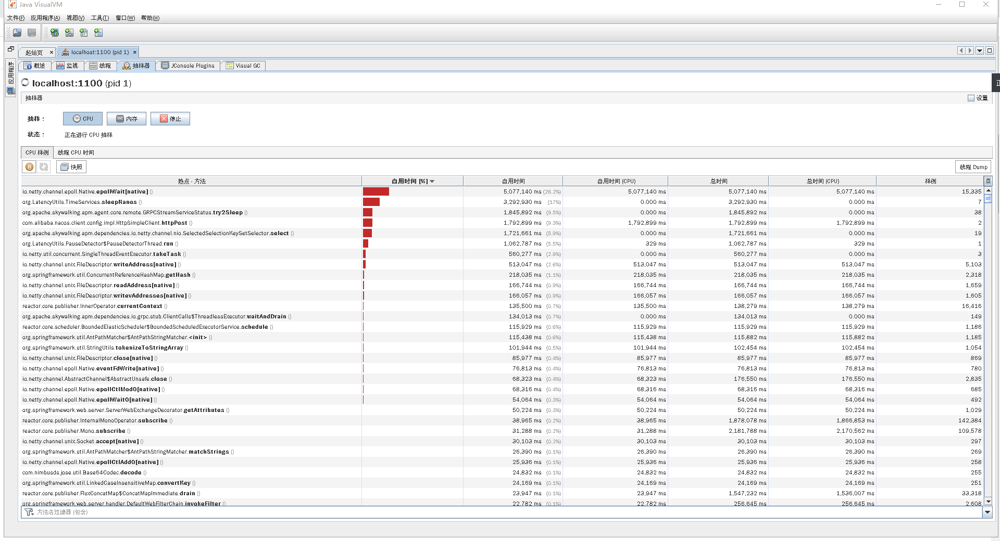
你看，当前的执行方法也都没啥异常的。
现在我们就把线程增加到6个，看能不能把CPU用高一点。如果CPU用多了之后，仍然是Gateway消耗的时间长，那我们就只有再继续加CPU了。
请你注意，在性能项目中，不要轻易给出加CPU这样的建议。一定要在你分析了逻辑之后，确定没有其他优化空间了，再给这样的建议。
优化效果
我们来看一下优化效果：
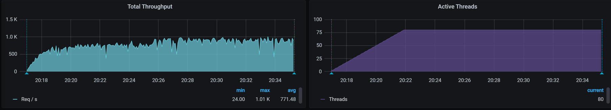
通过回归测试，我们看到TPS有一点增加，只是在图的后半段（由于在测试过程中，Gateway重启过，前面的TPS就当是预热了）增加的并不明显，大概有50多TPS的样子。不过，也算是有了效果。
我们优化到这里并没有结束，因为在查看各个Worker的过程中，我还发现一个奇怪的现象，那就是数据库里有两个CPU的使用率非常高。下面我们来扒一扒。
第二阶段
全局监控分析
因为前面优化的效果并不怎么样，所以我们要重新开始分析。让我们从全局监控开始：

看起来倒是没啥，数据库所在的worker-1也不见有什么大的资源消耗。
请你注意，我在文章中经常用这个界面来看全局监控的数据。但这并不是说，我只看这个界面。当我在这个界面中看不到明显的问题点时，我也会去看一些命令，像top/vmstat等，这和我一直说的全局监控的完整计数器有关。因此，你的脑袋里要有全局监控计数器的视图，然后才能真正看全第一层的计数器。
我们再来看数据库所在的worker上的top数据，发现了这样的现象：
bash-4.2$ top
top - 09:57:43 up 3 days, 17:54, 0 users, load average: 4.40, 3.57, 3.11
Tasks: 11 total, 1 running, 9 sleeping, 1 stopped, 0 zombie
%Cpu0 : 8.0 us, 4.7 sy, 0.0 ni, 84.3 id, 0.0 wa, 0.0 hi, 2.2 si, 0.7 st
%Cpu1 :100.0 us, 0.0 sy, 0.0 ni, 0.0 id, 0.0 wa, 0.0 hi, 0.0 si, 0.0 st
%Cpu2 : 6.5 us, 4.4 sy, 0.0 ni, 85.5 id, 0.0 wa, 0.0 hi, 2.2 si, 1.5 st
%Cpu3 : 7.8 us, 5.7 sy, 0.0 ni, 83.7 id, 0.0 wa, 0.0 hi, 2.1 si, 0.7 st
%Cpu4 : 96.0 us, 0.0 sy, 0.0 ni, 0.0 id, 0.0 wa, 0.0 hi, 4.0 si, 0.0 st
%Cpu5 : 7.0 us, 4.0 sy, 0.0 ni, 84.9 id, 0.0 wa, 0.0 hi, 2.6 si, 1.5 st
KiB Mem : 16265992 total, 1203032 free, 6695156 used, 8367804 buff/cache
KiB Swap: 0 total, 0 free, 0 used. 9050344 avail Mem
PID USER PR NI VIRT RES SHR S %CPU %MEM TIME+ COMMAND
1 mysql 20 0 8272536 4.7g 13196 S 248.8 30.5 6184:36 mysqld
可以非常明显地看到，有两个CPU的使用率高，那我们就来定向分析下数据库。
在此之前，我们不妨心中默念10遍“只要思路不乱，任何问题都是一盘菜”，因为保持思路清晰非常重要。
定向监控分析
我们要定向分析数据库，可是在数据库上又不是所有的CPU使用率都高，所以，我们要来看一下数据库线程到底在做什么动作。有了上面的进程信息之后，我们再深入到线程级：
bash-4.2$ top -Hp 1
top - 09:56:40 up 3 days, 17:53, 0 users, load average: 3.05, 3.30, 3.01
Threads: 92 total, 2 running, 90 sleeping, 0 stopped, 0 zombie
%Cpu0 : 5.4 us, 2.9 sy, 0.0 ni, 89.2 id, 0.0 wa, 0.0 hi, 2.2 si, 0.4 st
%Cpu1 : 99.7 us, 0.0 sy, 0.0 ni, 0.0 id, 0.0 wa, 0.0 hi, 0.0 si, 0.3 st
%Cpu2 : 5.4 us, 3.2 sy, 0.0 ni, 88.2 id, 0.0 wa, 0.0 hi, 2.5 si, 0.7 st
%Cpu3 : 6.3 us, 4.2 sy, 0.0 ni, 87.0 id, 0.0 wa, 0.0 hi, 2.1 si, 0.4 st
%Cpu4 : 96.3 us, 0.0 sy, 0.0 ni, 0.0 id, 0.0 wa, 0.0 hi, 3.7 si, 0.0 st
%Cpu5 : 4.0 us, 2.5 sy, 0.0 ni, 91.0 id, 0.0 wa, 0.0 hi, 1.8 si, 0.7 st
KiB Mem : 16265992 total, 1205356 free, 6692736 used, 8367900 buff/cache
KiB Swap: 0 total, 0 free, 0 used. 9052664 avail Mem
PID USER PR NI VIRT RES SHR S %CPU %MEM TIME+ COMMAND
311 mysql 20 0 8272536 4.7g 13196 R 99.9 30.5 18:20.34 mysqld
241 mysql 20 0 8272536 4.7g 13196 R 99.7 30.5 1906:40 mysqld
291 mysql 20 0 8272536 4.7g 13196 S 3.3 30.5 15:49.21 mysqld
319 mysql 20 0 8272536 4.7g 13196 S 3.0 30.5 11:50.34 mysqld
355 mysql 20 0 8272536 4.7g 13196 S 3.0 30.5 13:01.53 mysqld
265 mysql 20 0 8272536 4.7g 13196 S 2.7 30.5 18:17.48 mysqld
307 mysql 20 0 8272536 4.7g 13196 S 2.7 30.5 16:47.77 mysqld
328 mysql 20 0 8272536 4.7g 13196 S 2.7 30.5 15:34.92 mysqld
335 mysql 20 0 8272536 4.7g 13196 S 2.7 30.5 8:55.38 mysqld
316 mysql 20 0 8272536 4.7g 13196 S 2.3 30.5 14:38.68 mysqld
350 mysql 20 0 8272536 4.7g 13196 S 2.3 30.5 10:37.94 mysqld
233 mysql 20 0 8272536 4.7g 13196 S 2.0 30.5 14:19.32 mysqld
279 mysql 20 0 8272536 4.7g 13196 S 2.0 30.5 19:51.80 mysqld
318 mysql 20 0 8272536 4.7g 13196 S 2.0 30.5 11:34.62 mysqld
331 mysql 20 0 8272536 4.7g 13196 S 2.0 30.5 11:46.94 mysqld
375 mysql 20 0 8272536 4.7g 13196 S 2.0 30.5 1:29.22 mysqld
300 mysql 20 0 8272536 4.7g 13196 S 1.7 30.5 17:45.26 mysqld
380 mysql 20 0 8272536 4.7g 13196 S 1.7 30.5 1:24.32 mysqld
你看，只有两个MySQL的线程在使用CPU。到了这一步，你可能会想，接下来去查SQL！虽然可能就是SQL的问题，但我还是建议你找到相应的证据。
由于MySQL是用C语言写的，那我们就用gstack（这是一个装了GDB之后就会有的命令）打印一下这两个MySQL的栈看看具体的函数。我们把那两个PID（311、241）的栈拿出来之后，看到如下信息：
Thread 59 (Thread 0x7f1d60174700 (LWP 241)):
#0 0x000055a431fefea9 in JOIN_CACHE::read_record_field(st_cache_field*, bool) ()
#1 0x000055a431ff01ca in JOIN_CACHE::read_some_record_fields() ()
#2 0x000055a431ff070f in JOIN_CACHE::get_record() ()
#3 0x000055a431ff2a92 in JOIN_CACHE_BNL::join_matching_records(bool) ()
#4 0x000055a431ff18f0 in JOIN_CACHE::join_records(bool) ()
#5 0x000055a431e397c0 in evaluate_join_record(JOIN*, QEP_TAB*) ()
#6 0x000055a431e3f1a5 in sub_select(JOIN*, QEP_TAB*, bool) ()
#7 0x000055a431e37a90 in JOIN::exec() ()
#8 0x000055a431eaa0ba in handle_query(THD*, LEX*, Query_result*, unsigned long long, unsigned long long) ()
#9 0x000055a43194760d in execute_sqlcom_select(THD*, TABLE_LIST*) ()
#10 0x000055a431e6accf in mysql_execute_command(THD*, bool) ()
#11 0x000055a431e6d455 in mysql_parse(THD*, Parser_state*) ()
#12 0x000055a431e6e3b6 in dispatch_command(THD*, COM_DATA const*, enum_server_command) ()
#13 0x000055a431e6fc00 in do_command(THD*) ()
#14 0x000055a431f33938 in handle_connection ()
#15 0x000055a4320e66d4 in pfs_spawn_thread ()
#16 0x00007f1e8f1fcdd5 in start_thread () from /lib64/libpthread.so.0
#17 0x00007f1e8d3cc02d in clone () from /lib64/libc.so.6
Thread 41 (Thread 0x7f1d585e0700 (LWP 311)):
#0 0x000055a4319dbe44 in Item_field::val_int() ()
#1 0x000055a4319fb839 in Arg_comparator::compare_int_signed() ()
#2 0x000055a4319fbd9b in Item_func_eq::val_int() ()
#3 0x000055a431ff24ab in JOIN_CACHE::check_match(unsigned char*) ()
#4 0x000055a431ff26ec in JOIN_CACHE::generate_full_extensions(unsigned char*) ()
#5 0x000055a431ff2ab4 in JOIN_CACHE_BNL::join_matching_records(bool) ()
#6 0x000055a431ff18f0 in JOIN_CACHE::join_records(bool) ()
#7 0x000055a431e397c0 in evaluate_join_record(JOIN*, QEP_TAB*) ()
#8 0x000055a431e3f1a5 in sub_select(JOIN*, QEP_TAB*, bool) ()
#9 0x000055a431e37a90 in JOIN::exec() ()
#10 0x000055a431eaa0ba in handle_query(THD*, LEX*, Query_result*, unsigned long long, unsigned long long) ()
#11 0x000055a43194760d in execute_sqlcom_select(THD*, TABLE_LIST*) ()
#12 0x000055a431e6accf in mysql_execute_command(THD*, bool) ()
#13 0x000055a431e6d455 in mysql_parse(THD*, Parser_state*) ()
#14 0x000055a431e6e3b6 in dispatch_command(THD*, COM_DATA const*, enum_server_command) ()
#15 0x000055a431e6fc00 in do_command(THD*) ()
#16 0x000055a431f33938 in handle_connection ()
#17 0x000055a4320e66d4 in pfs_spawn_thread ()
#18 0x00007f1e8f1fcdd5 in start_thread () from /lib64/libpthread.so.0
#19 0x00007f1e8d3cc02d in clone () from /lib64/libc.so.6
很明显，是两个execute_sqlcom_select函数，也就是两个select语句。我们接着往上看栈，还可以看到是JOIN函数。既然是select语句中的JOIN，那我们直接去找SQL语句就好了。
因此，我们直接去查innodb_trx表，看看正在执行SQL有没有消耗时间长的。你也许会执行show processlist之类的命令，但是为了看全SQL，我还是建议你直接查trx表。由于我们使用的thread_handling是默认的one-thread-per-connection，操作系统的线程和mysql里的线程都是一一对应的。所以，我们在这里直接查trx表不会有什么误判。
通过查找innodb_trx表，我们看到了这样两个SQL消耗时间较长，列在这里：
-- sql1
SELECT
count(*)
FROM
oms_order o
LEFT JOIN oms_order_item ot ON o.id = ot.order_id
WHERE
o. STATUS = 0
AND o.create_time < date_add(NOW(), INTERVAL - 120 MINUTE)
LIMIT 0,
1000
-- sql2：
SELECT
o.id,
o.order_sn,
o.coupon_id,
o.integration,
o.member_id,
o.use_integration,
ot.id ot_id,
ot.product_name ot_product_name,
ot.product_sku_id ot_product_sku_id,
ot.product_sku_code ot_product_sku_code,
ot.product_quantity ot_product_quantity
FROM
oms_order o
LEFT JOIN oms_order_item ot ON o.id = ot.order_id
WHERE
o. STATUS = 0
AND o.create_time < date_add(NOW(), INTERVAL - 120 MINUTE)
我们提到多次，要想看SQL慢，就得看SQL对应的执行计划（在MySQL中，如果执行计划看得不清楚，还可以看Profile信息）。这两个SQL对应的执行计划如下：
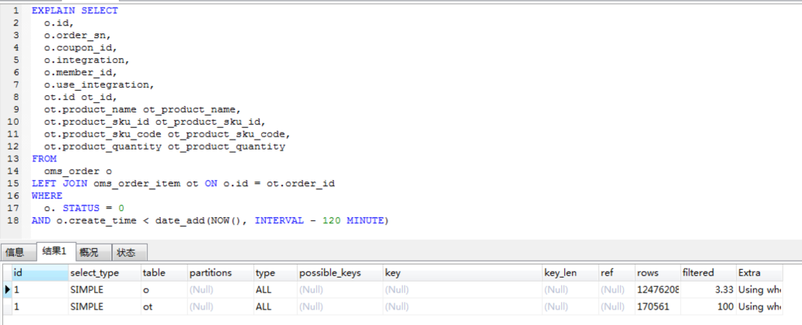
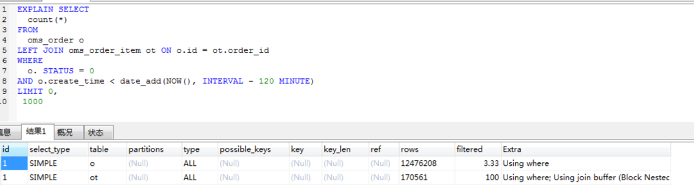
依然是常见的全表扫描。看到这里，你是不是有一种索然无味的感觉？但是，我们还是需要知道这两个语句为什么会产生。
其实，支付前查询订单列表这个接口并没有用到这两个SQL。于是，我到代码中看了一下这两个SQL的生成过程，反向查找到如下代码：
@Scheduled(cron = "0 0/20 * ? * ?")
private void cancelTimeOutOrder(){
Integer count = portalOrderService.cancelTimeOutOrder();
LOGGER.info("取消订单释放锁定库存：{}",count);
}
很显然，这是一个定时计划，每20分钟执行一次。到这里，问题就很清楚了，原来是定时任务调用了这两个批量的查询语句，导致了两个CPU使用率达到100%，并且也持续了一段时间。
像这样的定时任务，我们要格外关注一下，注意把它和实时业务分开部署和处理，减少批量业务对实时业务的资源争用。如果放在一起处理，那就要控制好要批量查询的数据量级，让SQL的查询变得合理。
由于数据库可用的CPU比较多，这个定时任务对我们的TPS并没有产生什么明显的影响，在这里我们不用做什么处理，以后注意分开就好了。
总结
在这节课中，虽然我们的优化并没有让TPS明显增加，但是因为分析的技术细节不一样，我也非常完整地记录了整个分析过程。
在第一阶段的分析中，我们运用的还是之前提到的分析思路。不同点在于，对于一个非常成熟的固定组件，我们要想优化它，就要去了解它的架构，找到它的相关性能参数。因为在实际的性能项目中，面对这样的组件，我们往往没有时间去纠结内部的实现，需要非常快速地作出判断。如果时间允许，你倒是可以慢慢折腾。
其实理解一个技术组件的原理，并没有想像中的那么高不可攀、深不可测，只要耐心看下去，你总会成长。
在第二阶段的分析中，我们由某几个CPU高的现象分析到了具体的SQL问题。这个过程虽然简单，但是从这个问题上，我们可以看出这个系统还有很多的优化空间，比如说主从分离、定时任务拆为单独的服务等等。不过，在我们的性能分析中，重点仍然是我跟你一直灌输的分析思路，希望你记在心里了。
课后作业
最后，我给你留两道题，请你思考一下：
- 为什么要看全部的全局监控计数器？
- 单CPU高时，如何定位具体的问题点？你有什么思路？
记得在留言区和我讨论、交流你的想法，每一次思考都会让你更进一步。
如果你读完这篇文章有所收获，也欢迎你分享给你的朋友，共同学习进步。我们下一讲再见！
© 2019 - 2023 Liangliang Lee. Powered by gin and hexo-theme-book.